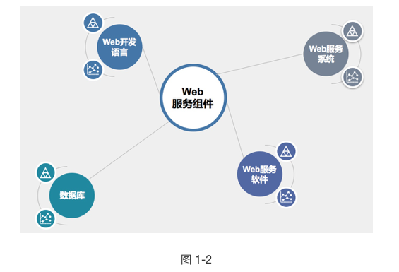
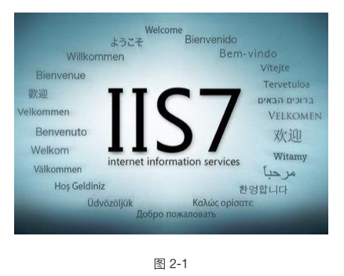
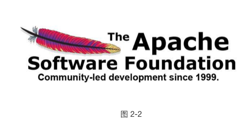
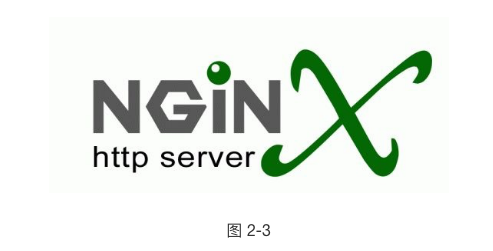
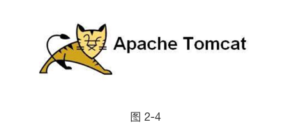
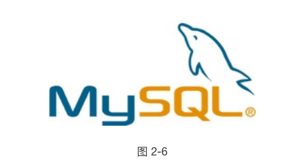
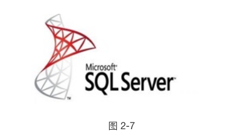
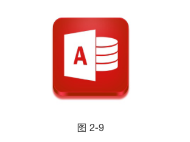

Web 服务原理
2.1 Web 概述
- Web（World Wide Web）即全球广域网，也称为万维网，它是一种基于超文本和 HTTP 的、全球性的、动态交互的、跨平台的分布式图形信息系统。是建立在 Internet 上的一种网络服务，为浏览者在 Internet 上查找和浏览信息提供了图形化的、易于访问的直观界面，其中的文档及超级链接将 Internet上 的信息节点组织成一个互为关联的网状结构。
- 我们通常所说的 WWW 服务、Web 服务，其实是一个意思，泛指通过 HTTP 协议传输，使用图形化界面来展示信息的一种方式。也就是俗称的网站或者网页
2.2 Web 相关概念
- 网页（Web 页面）：
- 网页，是网站中的一个页面，通常是网页是构成网站的基本元素，是承载各种网站应用的平台。通俗的说，网站就是由网页组成的。
- 网站（WebSite）：
- 网站，指根据一定的规则，使用 HTML 等工具制作的用于展示特定内容的相关网页的集合。简单地说，网站是一种通讯工具，就像布告栏一样，人们可以通过网站来发布或收集信息。
- 网站就是一组相同所属的网页的集合
- HTML（超文本标记语言）：
- “超文本” 就是指页面文本内可以包含图片、链接，甚至音乐、程序等非文字元素。
- 是一种规范，一种标准，超文本标记语言通过标记符号来标记要显示的网页中的各个部分
- 网页的本质是使用 HTML 语言编写代码所产生的文件
- 静态网页：
- 指纯 HTML 语言编写，呈现的内容固定化的 Web 页面
- 静态网页所呈现的所有内容都编写在源文件中，更改内容只能修改源代码
- 动态网页：
- 除了 HTML，还使用相应的动态程序序言编写的 Web 页面
- 动态网页中呈现的内容一般存储在数据库中，通过程序语言来调用数据
- HTTP（超文本传输协议）：
- 用于发布和接收 HTML 页面的协议，定义了 Web 客户端和服务器端的请求和应答标准
- 默认工作在 TCP 80 端口
- HTTPS（HTTP over SSL）
- 基于 SSL 的 HTTP 协议，使用 SSL 协议来保护 HTTP 传输，使 HTTP 协议更加安全
- 浏览器（Browser）：
- 可以接收并解析 HTML 语言，使 HTML 能够图形化显示，并与 Web 服务器进行交互的应用程序
2.3 Web 服务组件

要构建一个网站，一般需要具备 Web 服务系统、Web 服务软件、Web 开发语言、数据库这四个组件。这只是比较概括性的划分了 Web 服务的组件，如果要细分的话，还可以细分为操作系统、存储（Web 源文件和数据库）、Web 容器、中间件、Web 服务端语言、Web 开发框架、Web 应用、Web 前端框架、第三方内容等组件。本课程内容不关注 Web 的搭建和优化，所以只按照图示组件讲解
2.4 Web 服务系统
Web 作为网络服务，必然需要基于操作系统来运行和工作，这里的 Web 服务系统指的就是 Web 服务运行在哪种操作系统上
- Windows
- 作为使用最广泛的电脑端操作系统，Windows 无疑是良好的运行 Web 服务的操作系统平台。无论是桌面版的 Windows，还是 Server 版的 Windows，都具备运行 Web 服务的能力，但生产环境中的 Web 服务更多的会选择 Server 版的 Windows，如 Windows Server 2003、Windows Server 2008、Windows Server 2012 等
- Windows 拥有优秀的图形化界面处理能力，也成为了众多 Web 初学者入门会选择的操作系统
- Linux
- Server 端的操作系统，无疑是 Linux 的天下。基于开源、高效、安全等优点，Linux 成为了生产环境中搭建 Web 服务的首选操作系统
- 常见的有 CentOS、RatHat、Ubuntu，互联网中几乎 99% 的 Web 服务都运行在 Linux 系统之上
2.5 Web 服务软件
Web 服务软件指 Web 服务器，也称为 HTTP 服务器，是响应来自浏览器的 HTTP 请求，并且发送出网页文件的 Web 服务端软件。 想要把自己的网站发布到网络中让用户可以访问，就需要 Web 服务软件来搭建网站
- IIS（Internet Information Service）

- IIS 是微软在 Windows 操作系统中自带的 Internet 服务器软件，提供包括 Web、FTP、SMTP 等服务器功能，IIS 也只能运行在 Windows 中
- IIS 在几乎所有版本的 Windows 中都自带了，无需独立下载，全图形化界面操作，继承了 Windows 的操作风格，使用非常简单便捷
- IIS 支持发布静态网站，以及 ASP、ASP.NET 的动态网站，使用相应中间件还可以支持发布 PHP 的动态网站
- IIS 在安全性上一直被业界所诟病，著名的 IIS 6.0 版本中的文件解析漏洞可以让黑客非常轻松的绕过网站限制，上传 WebShell，来获得系统权限。直到 IIS 7.5 版本以后情况才有所好转
Apache

- Apache 是世界使用排名第一的 Web 服务器软件。它可以运行在几乎所有广泛使用的计算机平台上，由于其跨平台和安全性被广泛使用，是最流行的 Web 服务器端软件之一。它快速、可靠并且可通过简单的 API 扩充，将 Perl/Python 等解释器编译到服务器中。同时 Apache 音译为阿帕奇，是北美印第安人的一个部落，叫阿帕奇族，在美国的西南部。也是一个基金会的名称、一种武装直升机等等。
- 虽然 Apache 可以非常完美的运行在各种操作系统中，但是绝大多数的 Apache 还是运行在 Linux 之上，Apache 也成为了众多 Linux 发行版本的自带应用
- 严格来说，Apache 只支持发布静态网站、但可以通过中间件来支持 PHP，ASP、ASP.NET、JSP，但 Apache 仍然被大多数用来发布 PHP 网站
- Apache 虽然也存在安全性的漏洞，但由于其开源性，漏洞的修补和版本的更新速度非常快，相比 IIS， Apache 会更加安全
Nginx
- Nginx 是一款轻量级的 Web 服务器/反向代理服务器及电子邮件（IMAP/POP3）代理服务器，并在一个 BSD-like 协议下发行。其特点是占有内存少，并发能力强，事实上 nginx 的并发能力确实在同类型的网页服务器中表现较好，中国大陆使用 nginx 网站用户有：百度、京东、新浪、网易、腾讯、淘宝等。
- Nginx 只能安装在 Linux 系统中，但是也有 Windows 的移植版
- Nginx 是 Apache 的最佳替代品，相比 Apache，Nginx 在处理高并发业务时，资源消耗更低，性能更强
- Nginx 本身只是一款反向代理软件，只支持 HTML 静态页面，需要通过各种中间件来支持其他动态页面
- 虽然从性能上来讲，Nginx 要优于 Apache，但 Nginx 也存在模块少、BUG 多，稳定性较差的缺点
Tomcat

- Tomcat 服务器是一个免费的开放源代码的 Web 应用服务器，属于轻量级应用服务器，在中小型系统和并发访问用户不是很多的场合下被普遍使用，是开发和调试 JSP 程序的首选。
- Tomcat 可以作为一个 Web 服务软件，同样也可以作为 Apache 的一个中间件来使 Apache 可以支持 JSP 站点
- Tomcat 可以运行在 Windows 和 Linux 中
Weblogic
- Weblogic 是一个基于 JAVAEE 架构的中间件，WebLogic 是用于开发、集成、部署和管理大型分布式 Web 应用、网络应用和数据库应用的 Java 应用服务器。
2.6 Web 开发语言
Web 开发语言是指用于编写动态网页的语言，目前几乎所有的网站都是动态网页技术编写的。就算很多网站浏览时发现 URL 后缀是 html，也是通过后台做了动转静。
- PHP（超文本预处理器）
- PHP 是一种通用开源脚本语言。语法吸收了 C 语言、Java 和 Perl 的特点，利于学习，使用广泛，主要适用于 Web 开发领域。PHP 独特的语法混合了 C、Java、Perl 以及 PHP 自创的语法。它可以比 CGI 或者 Perl 更快速地执行动态网页。用 PHP 做出的动态页面与其他的编程语言相比，PHP 是将程序嵌入到 HTML（标准通用标记语言下的一个应用）文档中去执行，执行效率比完全生成 HTML 标记的 CGI 要高许多；PHP 还可以执行编译后代码，编译可以达到加密和优化代码运行，使代码运行更快。
- PHP 是目前使用最广泛的 Web 开发语言
- ASP（动态脚本页面）
- 是微软公司开发的服务器端脚本环境，可用来创建动态交互式网页并建立强大的 web 应用程序。当服务器收到对 ASP 文件的请求时，它会处理包含在用于构建发送给浏览器的 HTML 网页文件中的服务器端脚本代码。除服务器端脚本代码外，ASP 文件也可以包含文本、HTML（包括相关的客户端脚本）和 com 组件调用。
- ASP 简单、易于维护，是小型页面应用程序的选择。ASP 语言并不面向对象，开发难度相对较大，一般不用于大中型网站
- ASP.NET
- ASP.NET 又称为 ASP+，不仅仅是 ASP 的简单升级，而是微软公司推出的新一代脚本语言。ASP.NET 基于 .NET Framework 的 Web 开发平台，不但吸收了 ASP 以前版本的最大优点并参照 Java、VB 语言的开发优势加入了许多新的特色，同时也修正了以前的 ASP 版本的运行错误。
- 一般多见于政府机构和国企的网站
- JSP（JAVA 服务器页面）
- JSP 技术有点类似 ASP 技术，它是在传统的网页 HTML 文件中插入 Java 程序段 (Scriptlet) 和 JSP 标记 (tag)，从而形成 JSP 文件，后缀名为 .jsp。 用 JSP 开发的 Web 应用是跨平台的，既能在 Linux 下运行，也能在其他操作系统上运行。
- CMS（内容管理系统）
- 可以把 CMS 理解为网站模板，允许用户根据统一的网站模板，快速生成自定义的个人或企业站点；CMS 提供常见企业网站所需的的信息展示、信息更新、信息删除、信息管理等功能，包括非常详细的网站风格自定义设置。
- CMS 有各种语言编写的，常见的有 ASP、PHP、ASP.NET
- 常见的有动易 CMS，织梦 CMS，PHPcms 等
2.7 数据库
数据库（Database），即为数据的仓库，用于存储和记录数据信息。在动态网站的架构中，页面展示的内容并不是写在页面中，而是存储在数据库中，Web 服务通过动态语言来调用数据库中的数据，产生静态页面后再传递至客户端浏览器。这样就避免了网站内容更新时去修改源文件。只需要更新数据库就行了
MySQL

- MySQL 是一个关系型数据库管理系统，由瑞典 MySQL AB 公司开发，目前属于 Oracle 旗下产品。MySQL 是最流行的关系型数据库管理系统之一，在 WEB 应用方面，MySQL 是最好的 RDBMS (Relational Database Management System，关系数据库管理系统) 应用软件。
- 目前在 Web 架构中使用最广泛的数据库系统
SQL Server

- SQL Server 是由微软开发和推广的关系数据库管理系统（DBMS），它最初是由Microsoft、Sybase 和 Ashton-Tate 三家公司共同开发的，并于 1988 年推出了第一个 OS/2 版本。Microsoft SQL Server 近年来不断更新版本，1996 年，Microsoft 推出了 SQL Server 6.5 版本；1998 年，SQL Server 7.0 版本和用户见面；SQL Server 2000 是 Microsoft 公司于 2000 年推出，目前最新版本是 2017 年份推出的 SQL SERVER 2017。
Oracle
- Oracle 是甲骨文公司的一款关系数据库管理系统。它是在数据库领域一直处于领先地位的产品。可以说 Oracle 数据库系统是目前世界上流行的关系数据库管理系统，系统可移植性好、使用方便、功能强，适用于各类大、中、小、微机环境。它是一种高效率、可靠性好的 适应高吞吐量的数据库解决方案。
Access

- Microsoft Office Access 是由微软发布的小型关系数据库管理系统。它结合了 MicrosoftJet Database Engine 和 图形用户界面两项特点，是 Microsoft Office 套件的程序之一。
数据库管理工具
- PhpMyAdmin：一个以 PHP 为基础，以 Web 方式架构在网站主机上的 MySQL 的数据库管理工具，让管理者可用 Web 图形化界面管理 MySQL 数据库。
- Navicat：一套快速、可靠并价格相当便宜的数据库管理工具，专为简化数据库的管理及降低系统管理成本而设。它的设计符合数据库管理员、开发人员及中小企业的需要。
2.8 Web 服务常见架构
Web 服务架构指选择什么开发语言 + Web 服务软件 + 数据库 + 操作系统的组合来搭建 Web 服务，虽然严格来说，所有的组件都可以自由组合，但是因为某几种常被放在一起使用，所以拥有了越来越高的兼容度，逐渐共同组成了一个个强大的 Web 应用程序平台
- 2.8.1 LAMP
- Linux + Apache + MySQL + PHP
- 被誉为 Web 服务黄金组合，适用于大型网站架构，稳定性高，常见于企业网站。大多数网站都采用的该架构
2.8.2 LNMP
- Linux + Nginx + MySQL + PHP
- 使用 Nginx 来取代 Apache，对性能有较高要求的 Web 站点可以选择这种架构组合
2.8.3 WAMP
- Windows + Apache + MySQL + PHP
- 把 Apache 放在 Windows 操作系统中运行，适用于中小型网站架构，易于管理，常见于教育（大学等）、政府事业单位
2.8.4 其他
- IIS + ASP + Access：大多用在学校、地方政府等站点
- JSP + Tomcat + Oracle：大多用在企业内部 ERP 系统、金融机构站点